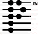

|
Saint Dominic |
Comments have been prepared by Chris Haslam using reputable commentaries, and checked for accuracy by the Rev'd Alan T Perry, of the Anglican Diocese of Montreal. While not intended to be exhaustive, they are an aid to reading the Scriptures with greater understanding. Comments are best read with the lessons. Feedback is always welcome. Lessons for this week from the Vanderbilt University web site
PDF file
DOC file for Palm OS. |
|
Ezekiel Ezekiel was a prophet and a priest. His ministry began before the conquest of Judah in 587 BC, and continued in exile in Babylon. This book is the foundation for both Jewish and Christian visionary or apocalyptic literature, e.g. Revelation (or The Apocalypse.) It is a book that contains many strange things (strange because we do not understand them, e.g. Ezekiel eating a scroll), but the prophet's message to the exiles is clear: he assures his hearers of God's abiding presence among them, and he emphasizes God's involvement in the events of the day, so that Israel and all nations "will know that I am the Lord". For the first time, we see the importance of the individual in his relationship to God. To a dispersed and discouraged people, he brings a message of hope: hope that God will restore them to their homeland and the temple. |
Ezekiel 37:1-14 It is likely that Ezekiel was among those deported when the Babylonians first took Jerusalem, in 598 BC. He opposed a political solution to Judah’s woes, espousing instead the notion of Israel as a community faithful to God in religious observance and obedience. Vv. 1-10 are a vision, a prophecy, and vv. 1-14 the interpretation. The “valley” is probably the Tigris-Euphrates plain. The scene the “spirit” of God shows the prophet is of an arid place, perhaps the site of a battle. The bones are “very dry”, long lifeless; they symbolize the exiles, who lack hope of resuscitation of the kingdom of Israel: see v. 11a. Contrasting with the dead bones are “breath” and “spirit” – both ru’ah in Hebrew. See especially v. 9. In vv. 12-13 the metaphor shifts to “graves”. God will renew the covenant, restoring Israel – but probably spiritually rather than literally. Perhaps v. 13 led to the Jewish notion of the resurrection of all at the end of time. |
|
Psalms Psalms is a collection of collections. The psalms were written over many centuries, stretching from the days of Solomon's temple (about 950 BC) to after the Exile (about 350 BC.) Psalms are of five types: hymns of praise, laments, thanksgiving psalms, royal psalms, and wisdom psalms. Within the book, there are five "books"; there is a doxology ("Blessed be ... Amen and Amen") at the end of each book. |
Psalm 130 This is a prayer for deliverance from personal trouble, but it ends with a message to all people. The “depths” are the chaotic waters, separation from God – as in Jonah’s prayer from the stomach of the great fish (Jonah 2:2). May God be attentive to my pleas. God forgives, so he shall be “revered” (v. 4). If God were to record all our misdeeds, how could anyone face him? He is merciful by nature, so I eagerly await his help, his “word” (v. 5), a prophecy from him. I wait as do watchmen guarding a town from enemy attack (v. 6). Perhaps (v. 7) the psalmist has now received a prophecy of salvation which he tells to all Israel: wait in hope for God; he offers unfailing “love”, freedom from grievous sin. |
|
Romans Romans is the first epistle in the New Testament, although not the first to be written. Paul wrote it to the church at Rome, which included both Jews and Gentiles. His primary theme is the basics of the good news of Christ, salvation for all people. The book was probably written in 57 AD, when Paul was near the end of his third missionary journey around the Eastern Mediterranean. It is unusual in that it was written to a church that Paul had not visited. |
Romans 8:6-11 Paul has written that, as a result of God's love shown in the liberating act of Christ's death and resurrection, we are empowered to live a new life, one of freedom from sin, from the finality of death and the Law. As experience shows, the Christian is able to live a life for God, in the Spirit. Christian life is bound up in the Spirit, and not by the desires of the flesh. Now he explains the difference between what he calls living in the Spirit and living according to the flesh: two very different mindsets (v. 6). A person whose mind “is set on the flesh” (v. 7), whose view is limited to the natural world, is at enmity with God because he is fundamentally unable to obey God's law – he lacks the power to transcend his inner conflicts, and “cannot please God” (v. 8). On the other hand, Christians are in the Spirit (v. 9) and the “Spirit ... dwells in you”, i.e. the Spirit fills and motivates our lifestyle. Attachment to Christ (belief in him) is only possible in this kind of relationship: Christ and the Spirit come together. Vv. 10-11 say: if Christ (or the Spirit) is in you, though you may be a corpse because of all the wrong you have done, you are actually very much alive – because of the Spirit. If God's Spirit is in you, God will resuscitate your bodies (from being corpses) through the Spirit, in raising you to new life at the end of time. |
|
John John is the fourth gospel. Its author makes no attempt to give a chronological account of the life of Jesus (which the other gospels do, to a degree), but rather "...these things are written so that you may come to believe that Jesus is the Messiah, the Son of God, and that through believing you may have life in his name." John includes what he calls signs, stories of miracles, to help in this process. |
John 11:1-45 Jesus is beyond the reach of the Jewish religious authorities, across the Jordan when Martha and Mary (in “Bethany”, near Jerusalem) send a message to him (v. 3): Lazarus, a follower, is ill. Jesus says that his illness is not terminal, rather it will show the “glory” (v. 4, power and authority) the Father has bestowed on the Son. We will see why Jesus delays (v. 6). He urges the disciples to return to “Judea” (v. 7) with him, but they remind him of what happened when he was last there (v. 8). Jesus replies with a parable: there is still time (“hours of daylight”, v. 9) to do God’s work; harm will not come to him “during the day”. Those who do dark deeds will fail because I am not in them (v. 10). His words in v. 11 are ambiguous, as v. 13 explains: the disciples think that Lazarus’ sleep indicates that he is getting better (“all right”, v. 12), but Jesus clarifies: “Lazarus is dead” (v. 14). Note Jesus’ clairvoyance. Restoring Lazarus to life will be a greater opportunity (than just healing him) for strengthening the disciples’ faith in Jesus (v. 15). Thomas shows courageous loyalty. People thought that one’s soul hovered around one’s body for three days, but when Jesus arrives, Lazarus has been dead for “four days” (v. 17). (Bodies were buried on the day of death.) Per custom, many have come to “console” (v. 19) the sisters. Perhaps Martha sets out to warn Jesus of the rites while Mary receives mourners (v. 20). Martha rebukes Jesus for his tardiness but shows her confidence in his ability to heal (v. 21). She goes further: perhaps because the Father grants the Son whatever he asks, Jesus will restore life to Lazarus (v. 22). She, as many did, believed in “the resurrection [of all] on the last day” (v. 24), but this is small comfort to her now. Jesus identifies himself as he who raises believers from death (“resurrection”, v. 25) and who is the principle of “life”. Physical death is normal, even so life in Christ will continue, and this life cannot be taken away by the death of the body. Martha affirms her faith in Jesus in terms used earlier by Andrew, Nathanael and those present at the Feeding of the Five Thousand. Jesus and Martha are still outside Bethany. She discerns that Jesus wishes to speak to Mary. She tells Mary “privately” (v. 28) either so she can escape from the visitors or to shield Jesus from any who plot against him. The visitors see Mary leave, and follow her. Mary’s words to Jesus echo Martha’s. Jesus is “disturbed” (v. 33) inwardly by the crowd’s attitude towards death; his humanity shows in v. 35, causing some to say that he weeps at the loss of a friend, but others criticize him: if he’d been here earlier, being a miracle-worker, he could have healed him! (v. 37). Martha warns him of the “stench” (v. 39) of the decaying corpse. Perhaps Jesus prayed at v. 33; now he publicly thanks the Father – to help the crowd understand that his power is from God, and not magic. Being bound in a burial shroud, Lazarus needs unbinding (v. 44). Many believed because of the miracle (v. 45), but others told the Pharisees about it (v. 46). © 1996-2003 Chris Haslam |
|
Web page maintained by Jane E. H. Ait kens Christ Church Cathedral © 1996-2005 Last Updated: 20050301 |
If you are already on that page, you will be taken to the top.
|
|||||||||||||||||||||||||||